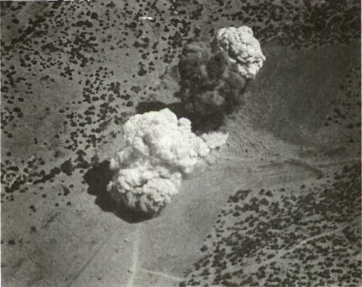

From liners and SH DOOR blast doors to complete HAS·HAAS design. REXSTEEL provides arch liners, blast doors, engineering and complete design through one point of contact.
Our civil-engineering flagship and dedicated shelter liners are different.
B381 structural plate, double-wave Wonder Arch and 400×200 Steel Rolled Arch Liner are three distinct profiles. Increasing plate thickness alone does not satisfy a military spall-liner specification.
01 / CIVIL STRUCTURES · B381
Original REXSTEEL product dimension illustration
381 × 140 mm
Commonly called the 380×140 large corrugation. It has a main corrugation without Wonder Arch’s small reinforcing flutes.
REXSTEEL’s main civil structural plate product
REXSTEEL manufactures 381×140 as its main civil structural plate for culverts, wildlife crossings and similar structures. We do not use this product as a shelter spall liner.
Not a substitute for specified U.S. military / NATO spall liners Not for aircraft shelters — REXSTEEL application policy
02 / DOUBLE-WAVE STEEL ARCH LINER
Wonder Arch double-wave panel · Product 3D image
610 × 355 mm
Products subject to U.S. military / NATO project requirements
Subject to each project’s specifications and approvals
Wonder Arch Liner A double-wave section combining a large corrugation with small reinforcing flutes.
A form addressed in military guidance and project specifications
TP 15 §8.1: 2-ft sinusoidal wave = approximately 610 mm Double Corrugated Steel Spall Liner Double corrugation · 3.2 mm steel plate
Approx. 610 mm primary pitch + double corrugation + 3.2 mm Project specification: Section 05 30 00 §1.3 · §2.1.1
03 / STEEL ROLLED ARCH LINER
400×200 deep-corrugation liner · Cross-section
400 × 200 mm
Products subject to U.S. military / NATO project requirements
Subject to each project’s specifications and approvals
Steel Rolled Arch Liner A single deep-corrugation liner without small reinforcing flutes.
5 mm-class steel · Check 6 GA requirements
Steel Rolled Arch Liner Single deep corrugation · 5 mm-class plate For 6 GA, confirm the contract’s base-metal thickness definition
Project-specific section, thickness and connection requirements apply Detailed specifications available through technical consultation
PROFILE & SPECIFICATION
Check geometry and thickness together.
Item
610 × 355 · Double wave
400 × 200 · Single deep corrugation
Product name
Double-Wave Steel Arch Liner
Steel Rolled Arch Liner
Available thicknesses
3.2 / 4.0 / 4.5 mm
3 / 4 / 5 / 6 / 7 / 8 mm
Applicable specification
Verified project specification: double-fluted, minimum 3.2 mm
Verified project requirements: 5 mm-class; confirm 6 GA conditions
Material · Surface protection
Material, pretreatment and e-coating to project specifications
Structural steel and surface treatment to project specifications
Double corrugation is a key design feature with a major influence on limiting concrete spall.The main corrugation and reinforcing flutes affect local buckling and deformation. The complete system—section, thickness, connections, anchorage and concrete—must be assessed. Increasing B381 thickness alone does not make it a substitute for a specified liner.
PROJECT SPECIFICATION
Double corrugation · Minimum thickness
In the reviewed project specification, Section 05 30 00 — Steel Arch Liner §1.3 requires a double-fluted section and §2.1.1 a minimum 3.2 mm thickness. Changes to sections and connections are subject to approval.
TP 15 · §8.1
Approximately 610 mm primary pitch
The HAS development and testing history describes a 2-ft sinusoidal wave (609.6 mm). This passage alone does not specify a 355 mm depth, small reinforcing flutes, 3.2 mm thickness or REXSTEEL product certification.
SYSTEM DESIGN & APPROVAL
Whole-facility design · Approval
The design and review framework involving DESR 6055.09 and TP 26 referenced in TP 15 §1.5, UFC 3-340-01 and UFC 3-340-02, and product specifications are treated separately. Actual application follows the final contract specifications, drawings and approval conditions.
References: TP 15 Rev.5 (July 2026) and the reviewed project specification. Public UFGS 05 30 00 is titled Steel Decksand is a separate document. These descriptions are not universal U.S. military / NATO product certification or a quantified same-condition comparison. The ban on B381 for shelters is REXSTEEL’s application policy.
NUMERICAL ANALYSIS / WONDER ARCH
Blast Simulation Research Team (Yeungnam University · Kyungsung University)
Structural responses to external blast and post-penetration detonation, studied with LS-DYNA by the Yeungnam and Kyungsung university team. Explore actual analysis images alongside key results.
TYPE A / DISPLACEMENTDisplacement under external blast
TYPE A / STRESSStress under external blast
TYPE B-2 / POST-PENETRATION EXPLOSIONResponse to post-penetration detonation
BLAST SIMULATION / LS-DYNA
Watch the analysis scenes in the film
These are edited promotional clips. The results below refer to the submitted report’s specific analysis conditions and evaluation times.
External blast analysis — The report concludes structural safety within its analysis conditions and evaluation method.
Post-penetration blast analysis — Local yielding and plastic deformation occurred in the multilayer system. The report states that overall arch geometry was maintained until the analysis ended and no distinct inward fragment scattering was observed.
Numerical analysis, not full-scale blast-test certification. These observations alone do not establish quantitative spall-velocity, depth or cone-angle compliance. They do not directly validate the new C-130 large-HAS concept or 4.5 mm extensions; those require separate analysis.
HISTORICAL FULL-SCALE TESTS
Records of full-scale blast testing
Historical U.S. Air Force and Defense Nuclear Agency tests provide context for shelter-system development. Distinguish the dates, structural types and reported outcomes.

Actual detonation · Aerial photographAD0886769 / AFWL-TR-71-65 · Fig.10 · Printed p.18 · 1971Deformation of a neighbouring shelter after testingSame report · Fig.13 · Printed p.21 · Hinge deformation, Shelter A wall
Jon M. Jorgensen · U.S. Air Force Weapons Laboratory. Evaluated the effects of an internal explosion in a standard double-corrugated arch shelter on neighbouring shelters.
Scope of the findings The donor shelter was destroyed, and neighbouring shelters sustained varying damage. The photographs show the detonation and post-test condition.
REPORT 02 / Tests conducted in 1981
Third-generation HAS full-scale tests
High Explosive Testing of Hardened Aircraft Shelters ADP001768 · DISTANT RUNNER
Ronald R. Bousek · U.S. Air Force / Defense Nuclear Agency. Full-scale external and internal blast tests of third-generation shelters evaluated explosives quantity-distance and structural response.
Scope of the findings Reports both external-blast protection and internal-blast failure behaviour. Some internal tests destroyed the shelter and aircraft; these are not presented as aircraft-dropped bomb tests.
Photographs extracted from the original report document historical test specimens. They do not constitute U.S. military certification of current REXSTEEL products or a guarantee for every blast condition. The 1971 report bears a 1977 public-release approval on its first page.
Related reporting / 25 April 2024 · RWNews (菱傳媒)
Debate over Taiwan shelter-liner specifications and thickness
The article attributes the following criticism to a source discussing Taiwan’s planned double-corrugated steel lining.
Traditional Chinese · Key excerpt
台灣規劃興建的「雙波浪鋼材襯裡」並非美軍規範材質，且厚度僅3mm
Translation
The double-corrugated steel lining planned for construction in Taiwan does not meet US military material specifications, and its thickness is only 3 mm.
Source: RWNews (菱傳媒) · 2024.04.25
MANUFACTURING
From fabrication to site assembly
Explore surface preparation, coating, quality checks and site assembly in photographs.
For the aircraft and protection objective, three shelter concepts
Steel-framed hangars and concrete-covered HAS are distinct systems. Wonder Arch 610×355 liners are evaluated project by project in 3.2 / 4.0 / 4.5 mm thickness options.
01 / STEEL FRAME HANGAR
For large aircraft Steel-framed hangar
The primary steel frame supports the large clear space. An inner liner, mineral wool, outer purlins and exterior armour plates are configured for the required protection.
50 m width · Planned door opening 44×14 m
A gallery space-planning example. Against C-130J overall dimensions, nominal door clearances are about 1.80 m per side and 2.16 m above. Door frames, equipment and operational margins require separate detailed review.
02 / CONCRETE-COVERED HAS
Standard-size Concrete-covered HAS
Plan the Wonder Arch liner and concrete cover together. Check temporary support during pouring separately from the completed concrete structure.
Reference types: approx. 21.6 m and 25.0 m
Existing HAS widths in public TP 15 §8.1, not allowable maximum spans of our 4.5 mm product. HAAS sections and thicknesses also follow their own project specifications.
03 / LARGE HAS STUDY
C-130-class Large-HAS study
A separate enlarged design, starting with the entrance and usable interior based on the C-130J’s 40.41 m wingspan and 11.84 m height.
Support and cover designed for the larger scale
A 22 m-class HAS cannot simply be scaled up with the same thickness and support count. Feasible 4.5 mm applications, concrete thickness, foundations and doors require whole-system structural and protection verification.
HAS provides aircraft protection; HAAS addresses protected alert readiness. The abbreviation alone does not determine the liner: mission, geometry, loads and approved specifications govern selection.
50 m wide · 66 m long · 23.5 m maximum height · Planned door opening 44×14 m. A 3D space and system study, not a finalized steel, door, connection or protection design.
Space planning for large aircraft3D concept · Assumed dimensions · Door type and drive require separate designPrimary frame and multilayer envelope, with distinct roles3D concept · Wonder Arch liner arrangement · Separate from concrete-covered HAS
C-130-class large HAS · Enlarged concrete-covered concept
A large-HAS space study with a concrete arch and inner Wonder Arch liner. The aircraft is a simplified C-130-class dimensional reference and the doors are shown open. This is neither a built project nor a structurally or protection-approved design.
Large-HAS space planning for C-130-class aircraft3D concept · Aircraft shown only for scale · Doors separately designedConcrete arch + inner Wonder Arch liner3D cutaway concept · Cover, reinforcement, support and connections are not finalized
Shelter types compared at the same scale
Third-generation HAS · Sliding doorsConcept illustration · Same scaleThird-generation HAS · Swing doorsConcept illustration · Same scaleHAAS · Swing doors (2 bays)Concept illustration · Same scale
Agree the scope you need: liners and blast doors, structural and blast analysis, site support and complete design.
ASupply
Liner plates and accessories
Shop drawings · Assembly drawings · Quantities
Mill certificates
Export packing · Factory inspection
BSupply + Engineering
Everything in option A
Assembly manuals in English / local language
Construction-stage liner calculations endorsed by a Korean Professional Engineer
Temporary-support calculations and concepts · Installation plan
First-shelter site-start support + Remote support
CComplete design · Integrated engineering
Everything in option B
Engineer of Record support · Design review and verification
LS-DYNA liner simulation · Certification support
SH DOOR blast-door supply and design coordination
Complete HAS·HAAS design package — separate quotation
Complete design is quoted separately. REXSTEEL works with specialist design partners on HAS·HAAS design. Discipline scopes, EOR, professional endorsements and local approval / permitting responsibilities are defined in the project contract.
BLAST DOOR PARTNER
Blast doors, coordinated with the liner
With SH DOOR TECH, review openings, frames, rails, drives and the liner / concrete construction sequence together. Door type and protection requirements are set for each project.
Tell us your facility geometry and required supply scope for product, design and site-support guidance. Detailed technical documents are provided under an NDA.